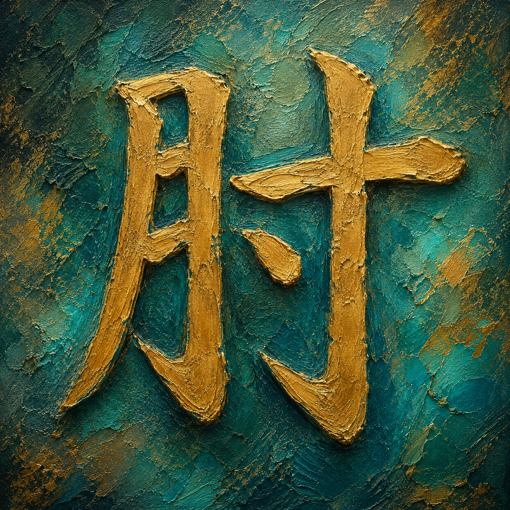
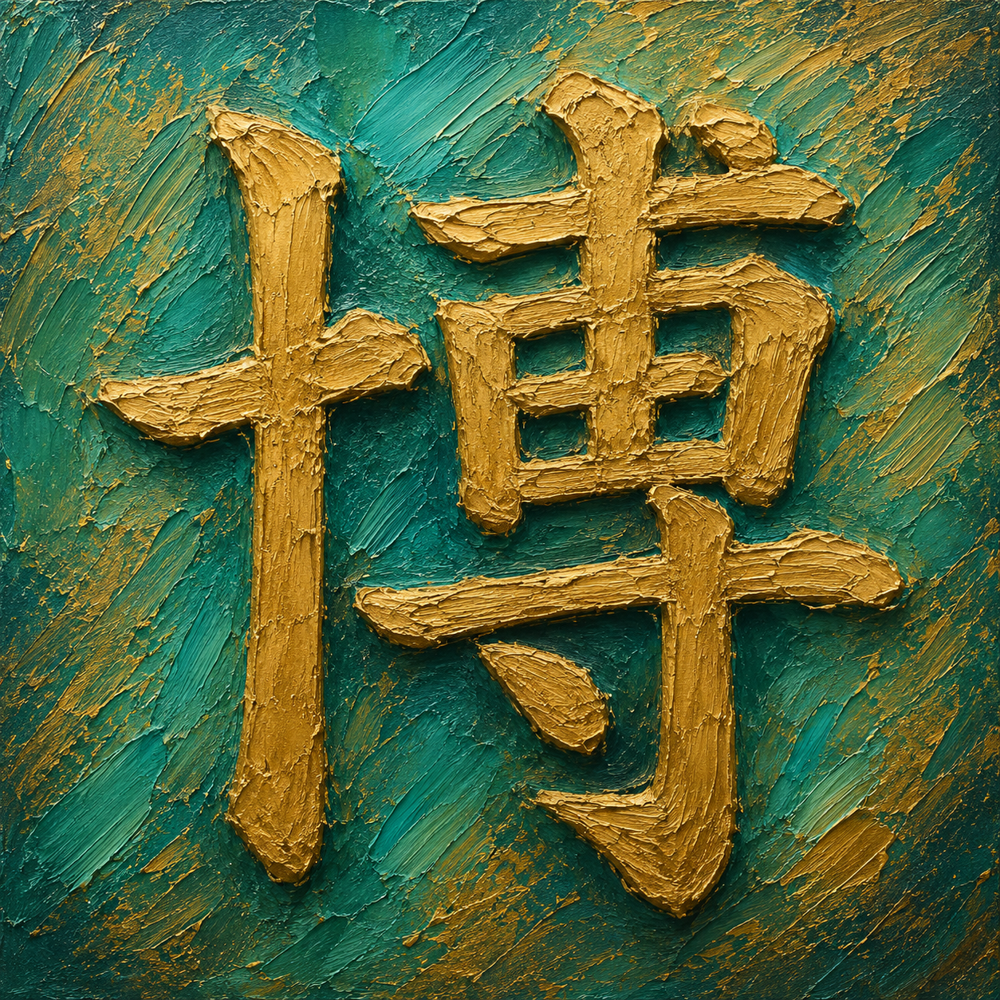
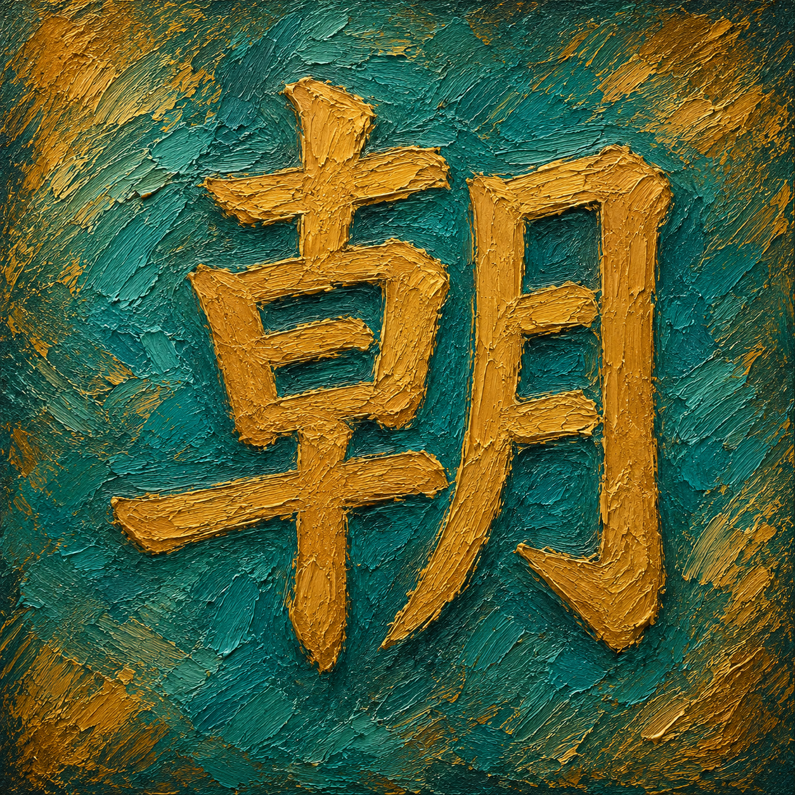
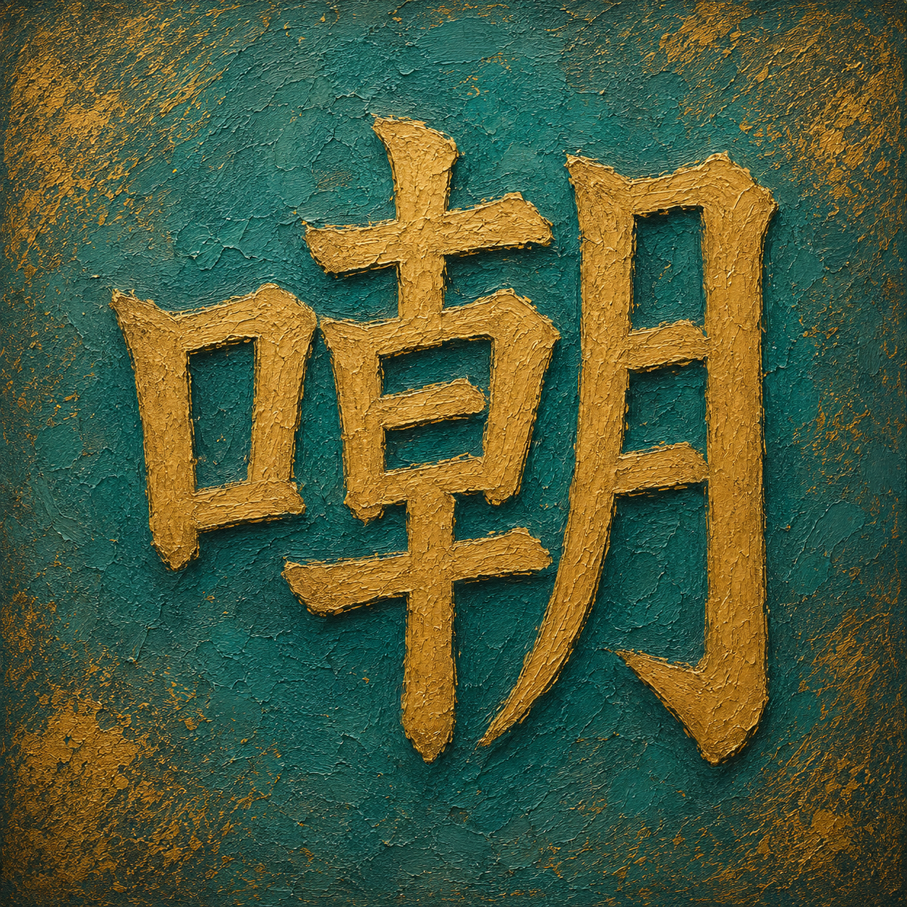
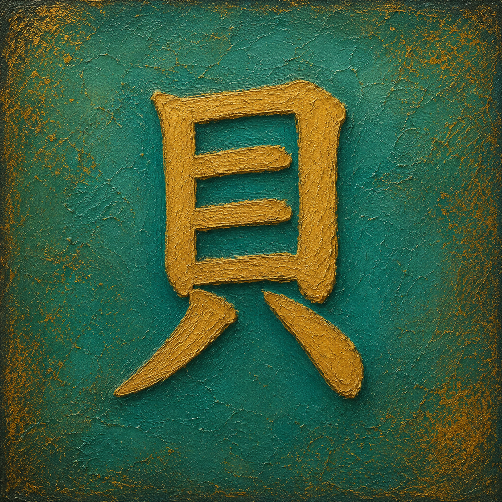
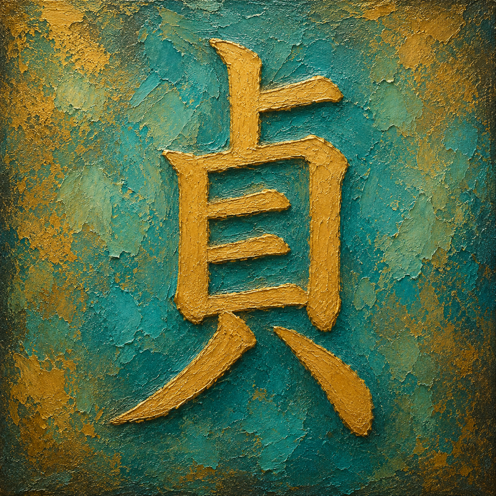

💡 Tip: Click the featured kanji to view stroke order animations

縁側に 赤茶の犬が座り
伸ばした舌だけが 笑みを伝えていた
Upon the engawa a reddish-brown dog sat still,
while only its outstretched tongue carried the smile.

木の升に 白米が満ち溢れ
朝の光だけが 稲の輝きを映した
The wooden measure brimmed with white rice,
while only the morning light mirrored the grain's glow.

夕空に 灯籠が次々と浮かび
坂の町だけが 橙の光に包まれた
Into the evening sky the lanterns rose one by one,
while only the hillside town wrapped itself in orange light.
満月の下 石畳の道が続き
障子の灯りだけが 夜を温めていた
Beneath the full moon the stone path wound on,
while only the light through shoji warmed the night.

指先で 小さな楔を打ち込み
「匠」の文字だけが 静かに見守っていた
At his fingertips he drove a tiny peg,
while only the character for master craftsman watched in silence.

縁側にもたれ 頬杖をつき
庭の灯籠だけが 午後を映していた
Leaning on the engawa she rested on her elbow,
while only the garden lantern mirrored the afternoon.

工房の床に 削り屑が積もり
老いた職人だけが 技を研いでいた
Wood shavings gathered upon the workshop floor,
while only the aged craftsman honed his skill.

本棚に囲まれ 老人が筆を執り
差し込む光だけが 知を照らしていた
Surrounded by shelves the old man held his brush,
while only the light streaming in illuminated his knowledge.
石の上に 卜の枝が立ち
夕陽だけが 山を静かに照らした
Upon the stones a divining rod stood tall,
while only the setting sun quietly lit the mountains.

神社の枝に おみくじが結ばれ
夕光だけが 運命を漂わせた
Upon the shrine branch omikuji slips were tied,
while only the evening light drifted over fate.

青空に 幟の凧が舞い
長い糸だけが 地面とつないでいた
Against the blue sky a banner kite danced,
while only its long string connected to the earth.

石段の下 猫が丸くなり
朝日だけが 参道を照らしていた
Beneath the stone step the cat curled round,
while only the morning sun lit the shrine path.

床の間に 梅と椿が置かれ
余白の静けさだけが 卓を研いでいた
Within the tokonoma plum and camellia were placed,
while only the stillness of open space refined the alcove.

茅葺の里に 朝日が差し込み
谷の霧だけが 黄金に染まっていた
Into the thatched village the morning sun streamed,
while only the valley mist turned to gold.

門の隙間に 三人の子が覗き
押さえた口だけが 笑いを隠していた
Through the gate's narrow gap three children peered,
while only their covered mouths hid the laughter.

点てる前に 一本の指が立ち
静かな気配だけが 室を包んでいた
Before whisking tea a single finger rose,
while only the quiet presence filled the room.

岩場で 少女が貝を掌に
波の記憶だけが 微笑みに残っていた
Upon the rocky shore the girl cradled a shell,
while only the sea's memory lingered in her smile.

畳の部屋で ヘアブラシをマイクに
幼い声だけが 夕を明るくした
In the tatami room she sang into a hairbrush,
while only a child's voice brightened the evening.

雪の参道に 武士が立ち
揺るぎぬ姿だけが 灯籠に映った
Upon the snowy shrine path the samurai stood,
while only his unwavering form reflected in the lanterns.

紺の作務衣に 四人が並び
縁側の光だけが 職を温めていた
In indigo samue four stood side by side,
while only the light from the engawa warmed their work.